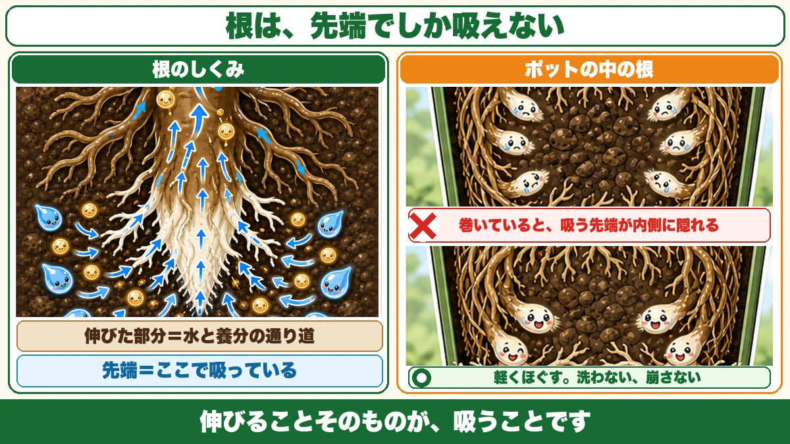
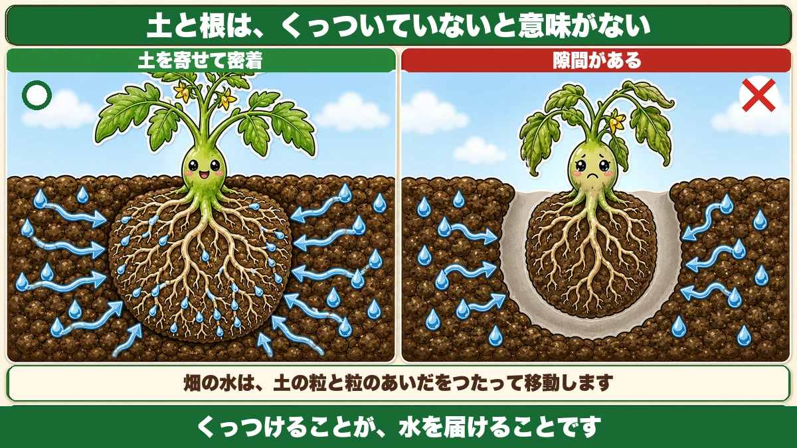
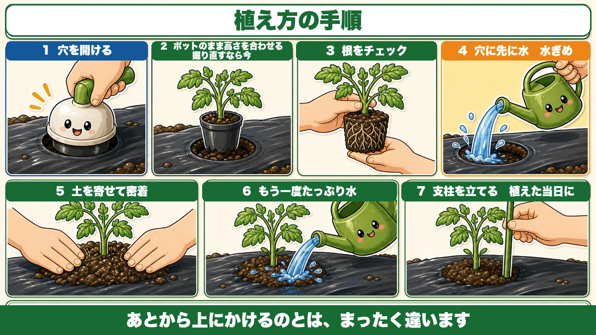
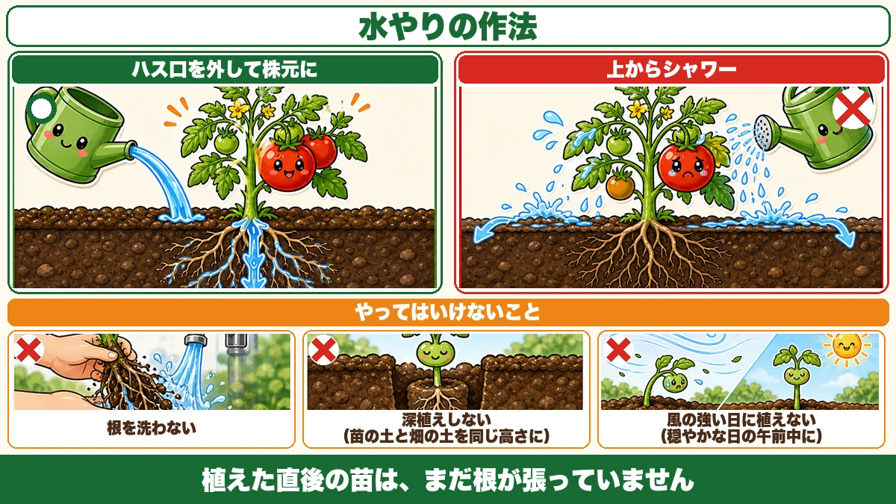

Roots only drink at the tip 🍅 So water the hole before you put the plant in

🗨️ "I planted it and it just sat there for weeks."
🗨️ "Cut a hole in the mulch, drop it in, water it — done, right?"
🗨️ "Am I supposed to tease the roots out, or not?"
Hello, I'm Eiko. Eight years of growing vegetables, organically and without pesticides, and a teaching licence in science.
Today: how to actually plant a transplant.
The most important line first:
A root only takes up water at its tip.
So before you plant, look for where the tips are. Once you've got that, why you loosen pot-bound roots and why you firm soil against the rootball both fall out of it automatically ☺️
Establishment — the word for what's happening
The clock starts on planting day
Establishment is a transplant putting out new roots and taking hold in its new soil.
A newly planted seedling doesn't start growing straight away. There's a stretch where it appears to be doing nothing — that's the time it spends making new roots.
And slow establishment delays everything after it.
- rooting is a week late
- so leaves are a week late
- so flowers are a week late
- so the harvest is late, and smaller
One week lost at the start gets carried all the way to summer.
"Hole, plant, water, done" works too
Honestly: plant roughly in spring or early summer and it will establish anyway. Temperatures are rising and the plant copes. I did it that way for my first three years.
But "does it establish" and "how fast does it establish" are different questions. This is where the second one gets decided.
Roots only drink at the tip

What this diagram says （図解の文字）
- Title: "Roots only drink at the tip."
- "The older, extended part = the channel for water and nutrients" ／ "The tip = this is where it takes up"
- Roots in the pot ✗ — "when they're circling, the absorbing tips are hidden on the inside"
- ○ — "tease them out gently. Don't wash them, don't break up the rootball"
- Bottom line: "Growing outward IS drinking."
The older part is plumbing
This is the thing I most want to get across.
The older, browned parts of a root don't absorb anything. Absorption happens at the white tip — the newest part, the bit about to extend.
So what is the rest doing? Carrying water and nutrients upward. It's plumbing.
Which is why roots are always pushing outward. Extending is how a plant drinks.
Circling roots hide their own tips
Here's where it goes wrong. A plant that's been in its pot a long time has roots circling round the inside of the pot — pot-bound.
So where are the tips? On the inside, wound round and trapped inside the rootball.
Plant it like that and the tips aren't touching the new soil at all, so it takes a long time before the plant starts drinking from its new home. That's your delayed establishment.
So loosen them — gently
If it's badly circled, tease the bottom of the rootball out a little before planting.
Gently is the operative word. Don't wash them. Don't shake the soil off. Fine roots break if you so much as handle them. Unwind the circling part at the base with your fingers and point it outward — that's all.
If it isn't circling, plant it as it is. There's nothing to gain from disturbing it.
Soil and root must be in contact, or none of it counts

What this diagram says （図解の文字）
- Title: "Soil and root have to touch or it means nothing."
- ○ "soil drawn in, in contact" ／ ✗ "a gap"
- "Water in a garden moves along the surfaces between soil particles."
- Bottom line: "Making contact IS delivering water."
A gap stops the root
If there's an air gap between the rootball and the garden soil, the roots can't advance. A root needs soil to grow into. Where there's a layer of air, it stops. And water doesn't cross it either.
Water travels through soil contact
Water in the ground moves along the surfaces between soil particles. If soil is touching the roots, water reaches them. If there's a gap, you can water all you like and it won't arrive.
I've written about firming the soil after sowing seed. Same principle. Making contact is how you deliver water.
So draw the soil in
After planting, pull the surrounding soil in by hand so it meets the rootball. You don't need to compact it — you just need no gaps. Light hand pressure is plenty.
Roots dissolve their own food with acid
Minerals aren't available as they are
A little more science. Soil contains minerals — calcium, iron and the rest — but a root can't take them up in solid form.
What it does instead: the root releases acid and dissolves the minerals around it, then draws up what's now in solution, at the tip.
The plant is preparing its own meals.
A freshly planted seedling can't do that well
A transplant is weakened. Photosynthesis isn't back to full, and its capacity to release acid isn't either. For the first few days it's poor at getting its own dinner ready.
Which is the reasoning behind adding a very dilute acid (diluted vinegar, for example) to the first waterings — you're doing a little of the plant's own job for it.
It's optional. Plants establish perfectly well without it. But the logic holds. If you try it, make it very dilute — too strong and you damage the roots instead.
The seven steps

What this diagram says （図解の文字）
- Title: "How to plant."
- 1 "cut the hole" ／ 2 "check the depth with the plant still in its pot — re-dig now if you need to" ／ 3 "check the roots" ／ 4 "water into the hole first" ／ 5 "draw soil in, make contact" ／ 6 "water thoroughly again" ／ 7 "put the stake in — the same day"
- Bottom line: "This is completely different from watering it from above afterwards."
① Cut the hole in the mulch
Drive the cutter in firmly. A half-hearted cut leaves a ragged edge, and the wind works on that later and tears the sheet.
② Set it in, still in its pot, to check the height
People skip this one. Put the plant into the hole with the pot still on. Too deep or too shallow shows up immediately, and now is when re-digging is easy. Find out after you've knocked the plant out of its pot, and you're working with bare roots exposed.
③ Check how the roots are sitting
Take the pot off — hold the base and push it out gently. Circling? Tease it out a little. Not circling? Leave it.
④ Water into the hole, before the plant goes in
This is the step that separates fast from slow.
Pour water into the hole before you set the plant in.
It is completely different from watering over the top afterwards. Water applied from above runs across the surface; water poured in first sits exactly where the roots are about to go.
The Japanese term is mizugime — wetting, in advance, the place the roots will first touch.
⑤ Set the plant, draw the soil in
Once it's drained, set the plant in and pull the soil in around it until it's in contact, as above.
⑥ Water thoroughly again
And here's the trick: take the rose off your watering can and pour at the base of the plant.
A shower from above mostly hits leaves and runs off — far less reaches the roots. Rose off, slowly, at the base.
⑦ Stake it
The same day. Leave it a fortnight and you'll be driving a stake down through roots that have spread into that space.
Things not to do

What this diagram says （図解の文字）
- Title: "How to water."
- ○ "rose off, at the base" ／ ✗ "shower from above"
- ✗ "don't wash the roots" ／ ✗ "don't plant deep — rootball surface level with the bed" ／ ✗ "don't plant on a windy day — pick a calm morning"
- Bottom line: "A plant you've just put in hasn't rooted yet."
Don't wash the roots
Don't try to clean the old compost off. Fine roots at this stage break if you touch them. Plant the rootball intact; loosen only the part that's circling.
Don't plant deep
Set the surface of the rootball level with the surface of the bed. Bury it deeper and the stem sits in soil, which is where rot starts. Too shallow and the rootball dries out. Level is the answer.
Don't plant on a windy day
A plant you've just put in hasn't rooted. Wind rocks it and opens a gap between root and soil — undoing the contact you just made.
Plant on a calm day, preferably in the morning. Morning because it then has the whole day to settle; plant in the evening and it goes straight into the cold of night.
To sum up
- ✅ Establishment = the transplant making new roots and taking hold
- ✅ Slow establishment delays everything, right through to yield
- ✅ Roots drink only at the tip; the older part is plumbing
- ✅ Circling roots hide their tips inside the rootball
- ✅ Tease out badly circled roots — but don't wash or break up the ball
- ✅ No contact, no water, and the roots can't advance either
- ✅ Roots release acid to dissolve minerals; a new transplant is poor at it (dilute acid is optional)
- ✅ Steps: cut → check height in the pot → check roots → water the hole → draw soil in → rose off, at the base → stake
- ✅ Plant level, not deep
- ✅ Calm morning, not a windy day
You don't have to do all of it. If you take one thing away, take step ④: pour water into the hole before the plant goes in. That one changes how fast it establishes 🍅
Thank you for reading!